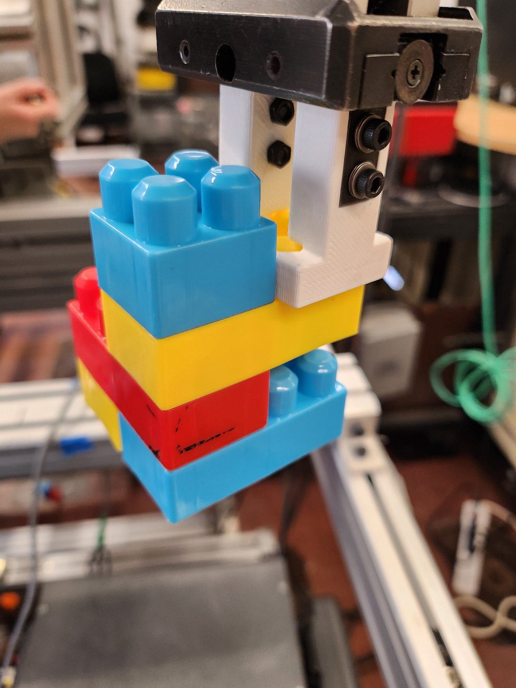

FANUC robot cell for autonomous LEGO sorting and assembly.
FANUC LR MateRSLogix 5000Custom EOAT

Programmed autonomous sorting and assembly sequences.Designed custom fixtures and end-of-arm tooling.Integrated PLC controls and process documentation.
Video
Outcome
A repeatable workcell concept combining tooling, controls, and process planning.